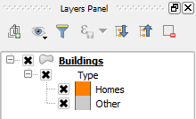

Back in QGIS's main window, you will notice no changes in the map canvas, but there will be a new legend item called type in the Layers Panel.
Expand the legend item contents by clicking the plus sign next to it, or by clicking the Expand all button. You will see the two previous rules in there.

Now, with this two rules nested, we can create other rules that are not related to the building's type.